华东理工大学硕士，工业设计工程，聚焦 AI Agent 交互设计与行业细分场景应用。我致力于运用AI技术转化为解决用户痛点的商业闭环，具备敏锐的市场洞察力与极强的执行力。
在技能矩阵上，我熟练运用 Figma、PRD 产出及数据分析工具。我坚信“产品即人格”，热爱利用 Vibe Coding / Design 的方式，让创意的诞生不再受限于技术边界，实现从 0 到 1 的快速跨越。我曾深度研究电商生态下的智能交互逻辑，能够站在商业落地与用户体验的交汇点，精准定义产品需求。
我对 AI 行业充满热情，不仅是 AI 工具的重度使用者，更是智能交互进化的观察者。秉承完美主义的匠心，我追求每一项功能的逻辑闭环与交互优雅。
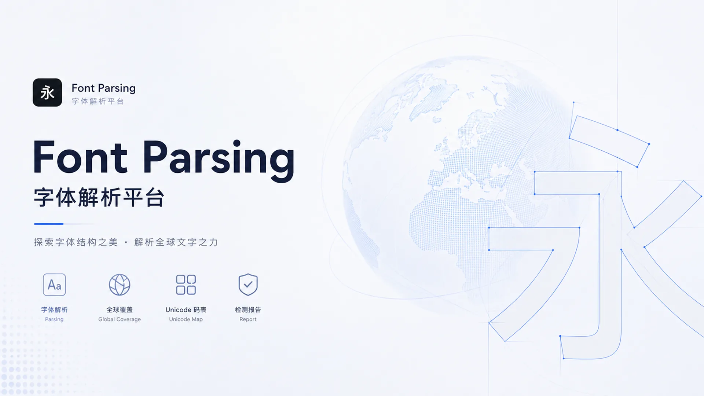
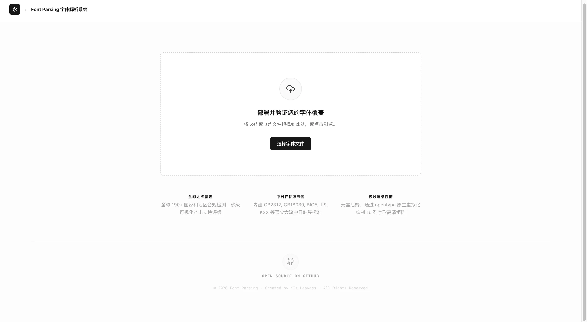
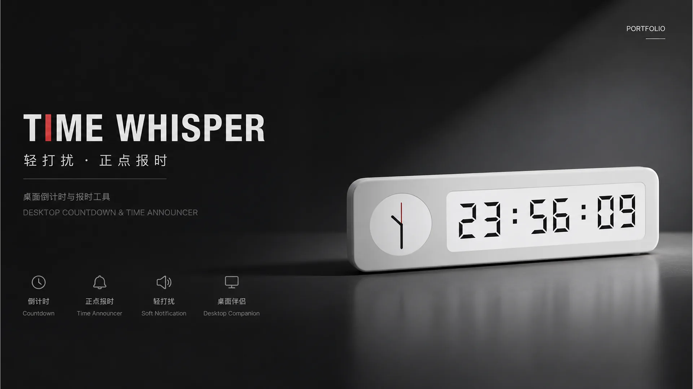
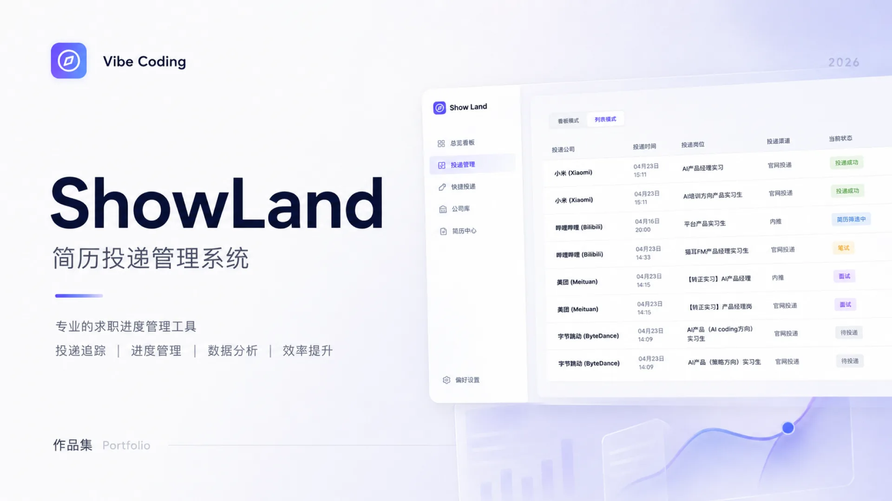
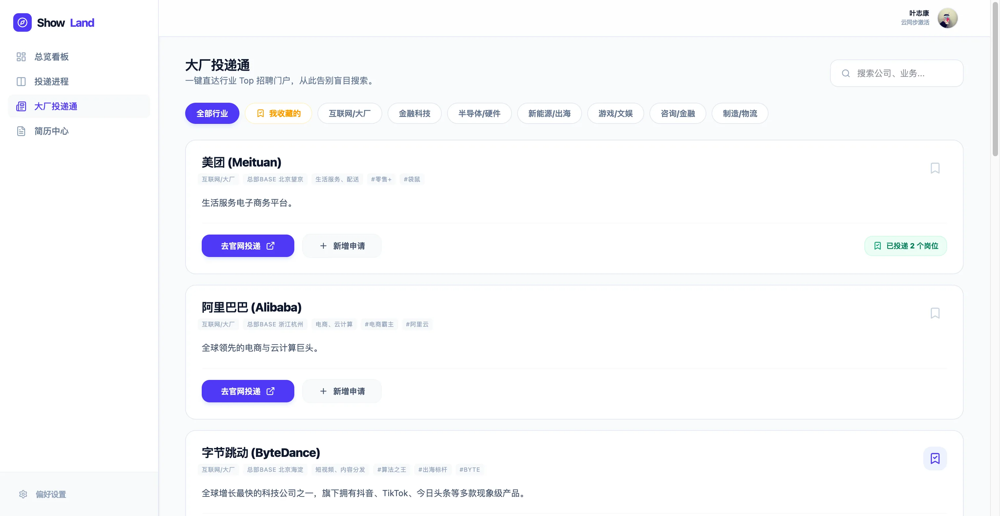
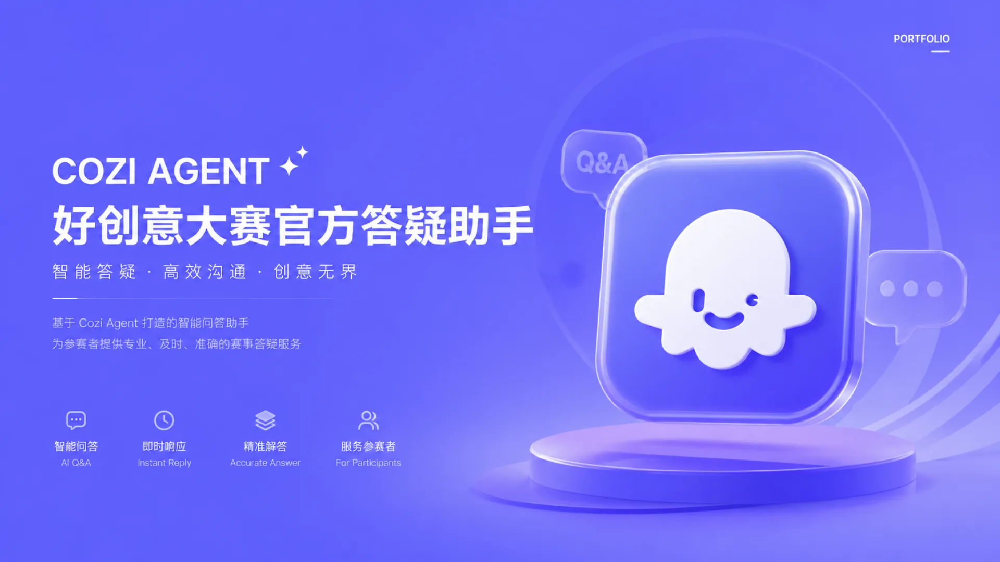
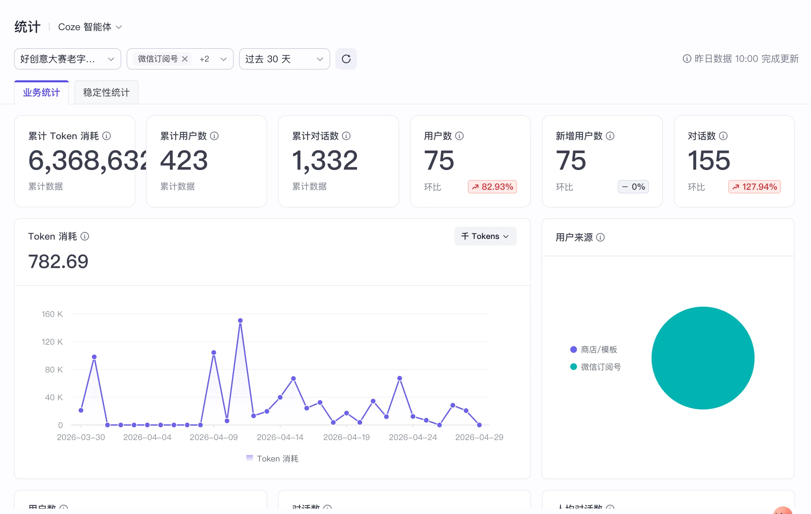
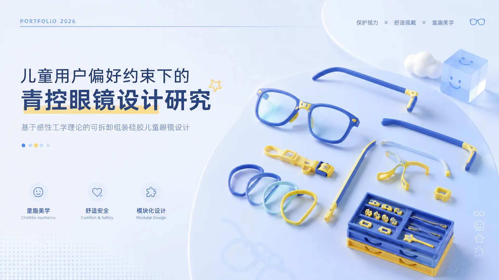
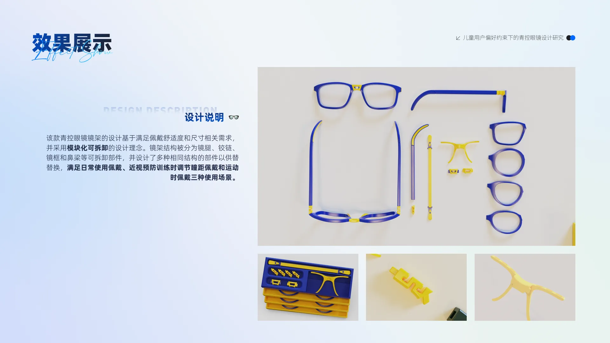
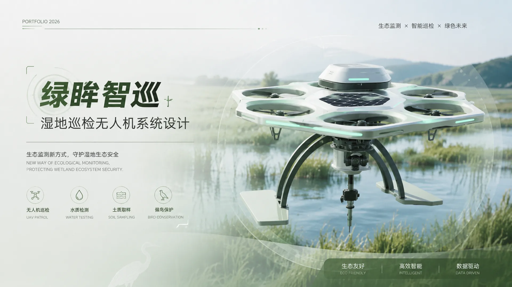
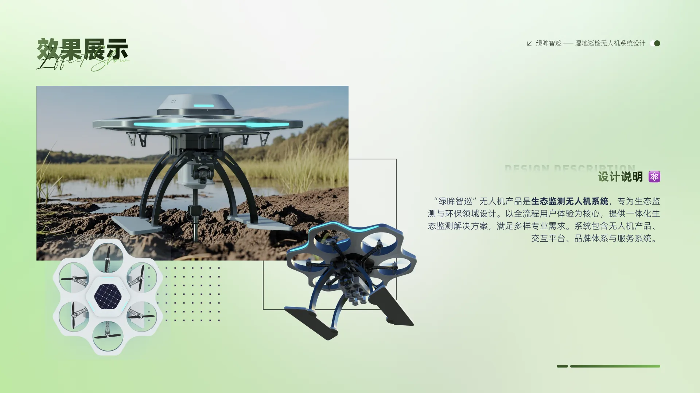
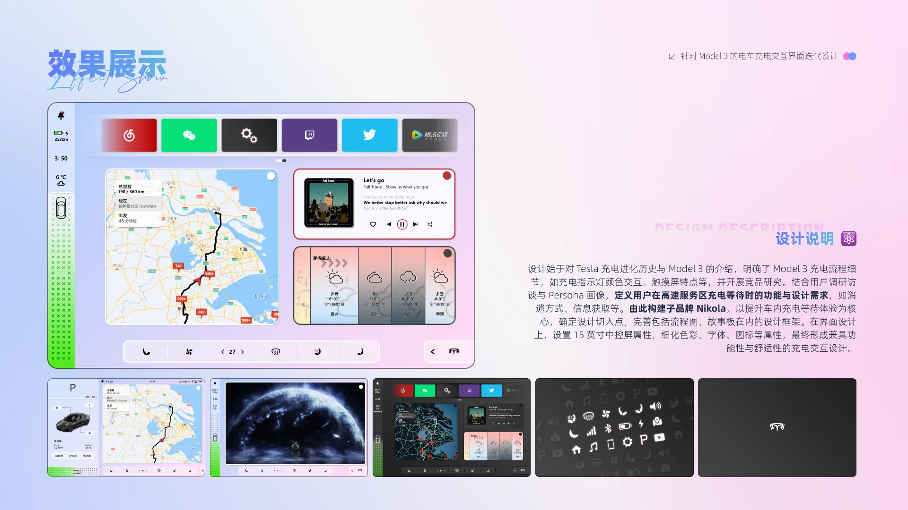
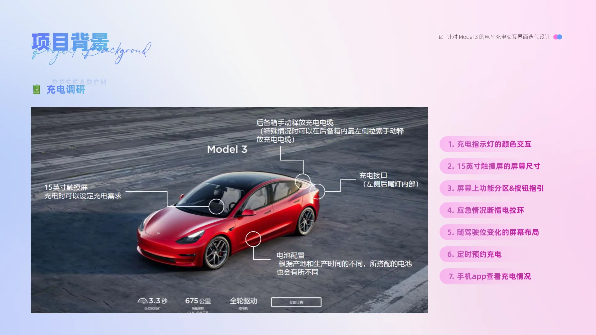
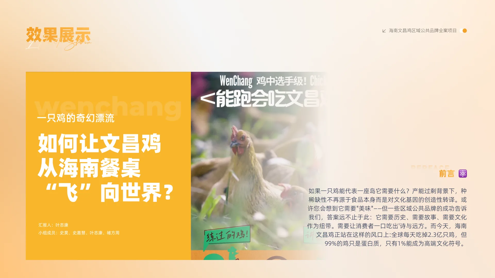
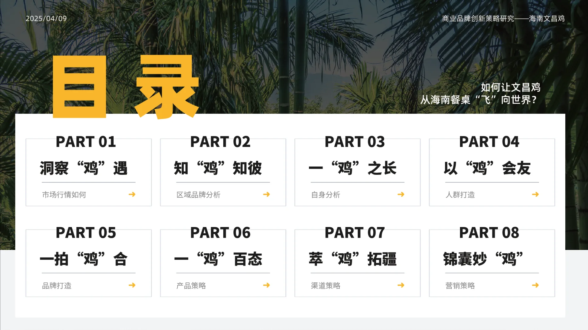
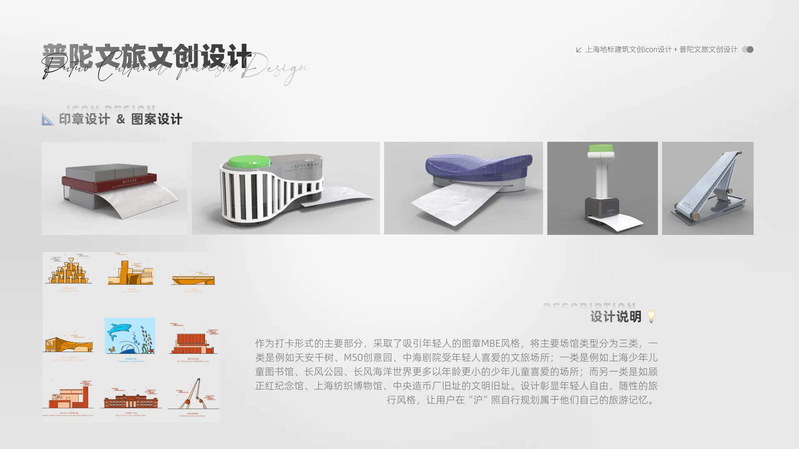
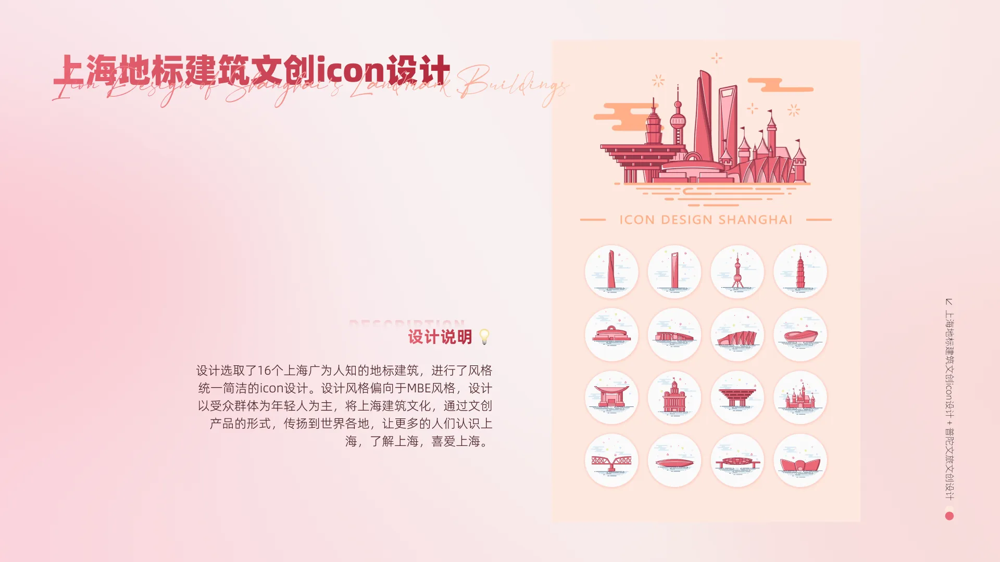
华东理工大学（211 / 双一流）
机械（工业设计工程）｜3.6/4.0 GPA · 6/49 名 · 前 10%
华东理工大学（211 / 双一流）
工业设计｜3.8/4.0 GPA · 3/27 名 · 前 10%
华东理工大学（211 / 双一流）
计算机科学与技术
交通大学附属中学
上海市重点高中
汉仪字库 - 产品 / 设计实习生
独立开发字体智能解析系统：针对字库交付缺乏可视化标准的问题，通过Vibe Coding纯前端架构实现otf/ttf字库文件解析，独立开发了字库全球可用性看板、Unicode码表、字体轮廓对比以及字体行业报告等5大核心功能。该系统对内满足设计师团队的日常修字与自查工作流，对外作为企业定制字体的交付验收测试工具，大幅缩短项目验收沟通成本。
独立完成小米图标的字体工程设计：运用Glyphs软件实现400+图标 × 粗/中/细三种字重全量适配，保障多字重视觉一致性。
得物 - 交易链路 AI产品实习生
搭建电商虚拟用户评测标准 Ecom-AgentBench：针对电商 Agent 端到端导购能力评估空白，结合十个业务场景设计了五维评价指标（理解与分类、消歧与澄清、鲁棒性、推理与引导、信息丰富度），产出 30 条虚拟用户用例，落地于电商 Agent/通用 Chatbot 横向评测及得物 AI 小助手版本迭代的纵向评测。在职期间负责产出 3 份评测报告，为得物AI小助手及功能迭代效果提供方向。
多模型竞品评测调研：为提升AI导购助手在行业内的领先度与用户满意度，开展多模型竞品调研，系统性评测豆包、Kimi、GPT、DeepSeek等主流Chatbot模型16个及垂类行业Agent的文案质量与交互体验。通过上线AB实验验证，最终筛选出Seed1.6即时模型替换Deepseek-R1深度思考模型上线。实验结果对AI小助手内的购买转化效率显著提升（UV价值+12.58%、GMV+12.55%、客单价+9.68%），对话跳失率下降18.5%，思考时长缩短70%。
商详AI解读个性化念头能力：基于用户调研发现同类目深/浅度用户关注点差异，构建个性化念头以代替原有固定念头。接入人群标签、实时浏览埋点及商品特征，通过大模型为不同用户动态调取合适的念头展示，并在跑鞋、玄学饰品等类目上线 AB 实验。结果整体提升模块点击与转化：跑鞋类目AI模块曝光购买率正向接近显著4.04%，带来购买转化率正向显著1.30%，gmv 正向接近显著1.51%；玄学饰品类目商详 SPU 浏览显著0.89%、次日回访率显著3.01%。
AI导购场景下的念头与预制回复生产：基于念头生成、选品算法的能力，批量调用大模型、模板化生成回答，人工审核并处理剩余圈品运营链路，覆盖商卡/商详/购物车/商品主题四大场景，累计处理念头 1500+ 条、生成并维护预制回答 400+ 条。
每日科技（上海）股份有限公司 - UI设计实习生
素材设计、图文排版：协助完成App的素材设计、Vision pro端的3D 素材设计，完成年度腕表、彩宝排行榜的图文排版制作与发布；熟知 UI 设计规范，能独自完成切图并与开发对接。
编程 & 开发技术
Python SQL JavaScript HTML CSS 微信小程序 JSON Markdown设计类软件
PS AE Figma Glyphs Rhino Keyshot产品 & 用户研究
PRD 文档撰写 原型设计 用户调研 竞品分析 数据分析 AB 实验AI 工具
ChatGPT Google Gemini Cursor Google AI Studio Claude Code Workbuddy Cozi Stitch Figma Make办公协作
Office 全系列 飞书 Canva 135编辑器语言能力
CET-4 CET-6